Time/Songs:
(6:03) Animate
(4:30) Stick It Out
(4:48) Cut To The Chase
(4:54) Nobody's Hero
(4:37) Between Sun And Moon
(5:45) Alien Shore
(5:02) Speed Of Love
(4:51) Double Agent
(4:05) Leave That Thing Alone
(4:26) Cold Fire
(5:11) Everyday Glory
Animate
-------
POLARIZE ME
SENSITIZE ME
CRITICIZE ME
CIVILIZE ME
COMPENSATE ME
ANIMATE ME
COMPLICATE ME
ELEVATE ME
Goddess in my garden
Sister in my soul
Angel in my armor
Actress in my role
Daughter of a demon-lover
Empress of the hidden face
Priestess of the pagan mother
Ancient queen of inner space
Spirit in my psyche
Double in my role
Alter in my image
Struggle for control
Mistress of the dark unconscious
Mermaid of the lunar sea
Daughter of the great enchantress
Sister to the boy inside of me
My counterpart -- my foolish heart
A man must learn to rule his tender part
A warming trend -- a gentle friend
A man must build a fortress to defend
A secret face -- a touch of grace
A man must learn to give a little space
A peaceful state -- a submissive trait
A man must learn to gently dominate
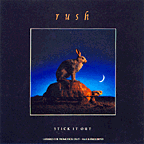
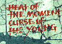
Atlantic Promo Single (PRCD 5314-2)
Stick It Out
----- -- ---
Trust to your instincts
If it's safely restrained
Lightning reactions
Must be carefully trained
Heat of the moment
Curse of the young
Spit out your anger
Don't swallow your tongue
STICK IT OUT
Don't swallow the poison
SPIT IT OUT
Don't swallow your pride
STICK IT OUT
Don't swallow your anger
SPIT IT OUT
Don't swallow the lies
Natural reflex
Pendulum swing
You might be too dizzy
To do the right thing
Trial under fire
Ultimate proof
Moment of crisis
Don't swallow the truth
STICK IT OUT
Each time we bathe our reactions
In artificial light
Each time we alter the focus
To make the wrong moves seem right
You get so used to deception
You make yourself a nervous wreck
You get so used to surrender
Running back to cover your neck
STICK IT OUT
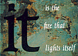
Cut To The Chase --- -- --- ----- It is the fire that lights itself But it burns with a restless flame The arrow on a moving target The archer must be sure of his aim It is the engine that drives itself But it chooses the uphill climb A bearing on magnetic north Growing farther away all the time Can't stop -- moving Can't stop -- moving Can't stop YOU MAY BE RIGHT IT'S ALL A WASTE OF TIME I GUESS THAT'S JUST A CHANCE I'M PREPARED TO TAKE A DANGER I'M PREPARED TO FACE CUT TO THE CHASE It is the rocket that ignites itself And launches its way to the stars A driver on a busy freeway Racing the oblivious cars It's the motor of the western world Spinning off to every extreme Pure as a lover's desire Evil as a murderer's dream Young enough not to care too much About the way things used to be I'm young enough to remember the future -- The past has no claim on me I'm old enough not to care too much About what you think of me But I'm young enough to remember the future And the way things ought to be WHAT KIND OF DIFFERENCE CAN ONE PERSON MAKE? CUT TO THE CHASE
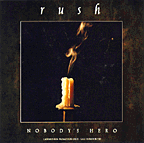
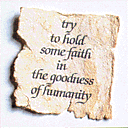
Atlantic Promo Single (PRCD 5430-2)
Nobody's Hero -------- ---- I knew he was different, in his sexuality I went to his parties, as a straight minority It never seemed a threat to my masculinity He only introduced me to a wider reality As the years went by, we drifted apart When I heard that he was gone I felt a shadow cross my heart But he's nobody's -- Hero -- saves a drowning child Cures a wasting disease Hero -- lands the crippled airplane Solves great mysteries Hero -- not the handsome actor Who plays a hero's role Hero -- not the glamor girl Who'd love to sell her soul If anybody's buying NOBODY'S HERO I didn't know the girl, but I knew her family All their lives were shattered in a nightmare of brutality They try to carry on, try to bear the agony Try to hold some faith in the goodness of humanity As the years went by, we drifted apart When I heard that she was gone I felt a shadow cross my heart But she's nobody's -- Hero -- the voice of reason Against the howling mob Hero -- the pride of purpose In the unrewarding job Hero -- not the champion player Who plays the perfect game Not the glamor boy Who loves to sell his name Everybody's buying NOBODY'S HERO As the years went by, we drifted apart When I heard that you were gone I felt a shadow cross my heart Hero
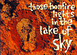
Click here for the original poem written by Pye Dubois.
Between Sun And Moon ------- --- --- ---- There is a lake between sun and moon Not too many know about In the silence between whisper and shout The space between wonder and doubt This is a fine place Shining face to face Those bonfire lights in the mirror of sky The space between wonder and why ahh yes to yes to ahh ahh to yes why the sun why the sun There is a fine line between love and illusion -- A fine place to penetrate The gap between actor and act The lens between wishes and fact This is a fine place To hesitate Those bonfire lights in the lake of sky The time between wonder and why Some need to pray to the sun at high noon Some need to howl at the midwinter moon Reborn and baptized in a moment of grace We just need a break -- From the headlong race ahh yes to yes to ahh ahh to yes why the sun why the sun This is a fine place, shining face to face These bonfire lights in the mirrored sky The space between wonder and why
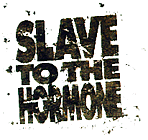
Alien Shore ----- ----- You and I, we are strangers by one chromosome Slave to the hormone, body and soul In a struggle to be happy and free Swimming in a primitive sea You and I, we must dive below the surface A world of red neon, and ultramarine Shining bridges on the ocean floor Reaching to the alien shore For you and me -- Sex is not a competition For you and me -- Sex is not a job description For you and me -- We agree You and I, we are pressed into these solitudes Color and culture, language and race Just variations on a theme Islands in a much larger stream For you and me -- Race is not a competition For you and me -- Race is not a definition For you and me -- We agree Reaching for the alien shore You and I, we reject these narrow attitudes We add to each other, like a coral reef Building bridges on the ocean floor Reaching for the alien shore For you and me -- We hold these truths to be self-evident For you and me -- We'd elect each other president For you and me -- We might agree But that's just us Reaching for the alien shore
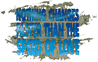
The Speed Of Love --- ----- -- ---- Love is born with lightning bolts Electro-magnetic force Burning skin and fireworks A storm on a raging course Like a force of nature, Love can fade with the stars at dawn Sometimes it takes all your strength Just to keep holding on At the speed of love A radiance that travels At the speed of love My heart goes out to you. Love is born with solar flares From two magnetic poles It moves towards a higher plane Where two halves make two wholes Like a force of nature, Love shines in many forms One night we are bathed in light One day carried away in the storms At the speed of love Nothing changes faster Than the speed of love My heart goes out to you We don't have to talk We don't even have to touch I can feel your prescence In the silence that we share Got to keep moving At the speed of love Nothing changes faster Than the speed of love Got to keep on shining At the speed of love Nothing changes faster Than the speed of love My heart goes out to you
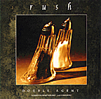
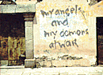
Atlantic Promo Single (PRCD 5431-2)
Geddy Lee ("Counterparts Radio Premiere"): We were losing our minds, is what we were doing! "Double Agent" was a complete exercise in self-indulgence, and really, it was one of the last things we wrote on the record, and we just kind of -- we'd written all these songs that were heavily structured, and, you know, were crafted and meticulously worked on: this note and that note, and this is a song we just wanted to kind of get our yah-yahs out and just have a bit of a rave. And really, it's one of the goofiest songs I think we've ever written, but I'm quite happy with the result. In its own way, I think it's an interesting little piece of lunacy.
Double Agent ------ ----- Where would you rather be? Anywhere but here When will the time be right? Anytime but now On the edge of sleep, I was drifting for half the night Anxious and restless, pressed down by the darkness Bound up and wound up so tight So many decisions, a million revisions Caught between darkness and light... Wilderness of mirrors World of polished steel Gears and iron chains Turn the grinding wheel I run between the shadows Some are phantoms, some are real Where would you rather be? Anywhere but here When will the time be right? Anytime but now The doubt and the fear I know would all disappear Anywhere but here On the edge of sleep, I heard voices behind the door The known and the nameless, familiar and faceless My angels and my demons at war Which one will lose -- depends on what I choose Or maybe which voice I ignore... Wilderness of mirrors Streets of cold desire My precious sense of honor Just a shield of rusty wire I hold against the chaos -- And the cross of holy fire Wilderness of mirrors So easy to deceive My precious sense of rightness Is sometimes so naive So that which I imagine Is that which I believe On the edge of sleep, I awoke to a sun so bright Rested and fearless, cheered by your nearness I knew which direction was right The case had been tried by the jury inside The choice between darkness and light...
Instrumental
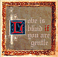
Geddy Lee ("Counterparts Radio Premiere"): Um, "Cold Fire". That song went through many permutations.
Alex Lifeson: Yeah, that was actually one of the songs that we had a bit of a problem getting into lyrically, working on it from a musical point of view.
GL: Yeah, it was hard to know the approach, and that was a song that we felt a little ...
AL: That's right! Actually we had a few rewrites of this musically.
GL: We rewrote that song quite a bit. And thankfully, I think Peter Collins' presence really pulled that song together. He came in and he pointed out certain strengths in the previous versions of the songs that we had, and he really helped us reorganize that song. It wasn't until he got there, I think, that we finally locked in on a feel for those verses that enabled Alex to play those great kind of steel guitar lines -- steel guitar-like lines -- that he's playing, and enabled me to open up harmonically. I was having trouble with the verses, you know, it's a tough song, when you're dealing with this issue of male/female relationships, which is such a foreign subject for us to deal with, in a song. You want to make sure it doesn't sound trite or hackneyed or you're not just doing yet another -- who needs another song about relationships? It took us a while to get the right mood, and I was really happy with the mood we ended up with in the verses, and I think, oddly enough, as much as it was a nightmare, that song for me, when I hear the record now, I think the verses are one of the strongest parts of the album, in that song.
AL: Yeah, I think there's a great balance between the romantic picture on the one side, and how the music is sympathetic to those lyrics, and then the other point of view, which is much colder ...
GL: Much tougher.
AL: ... more based in reality. And the contrast between the lyrics and the music, and how they support each other, I think really worked out successfully on that song, from what Ged said was a very difficult song for us to work on.
Cold Fire ---- ---- It was long after midnight When we got to unconditional love She said sure, my heart is boundless But don't push my limits too far I said if love was so transcendant I don't understand these boundaries She said just don't disappoint me -- You know how complex women are I'll be around If you don't let me down Too far It was just before sunrise When we started on traditional roles She said sure I'll be your partner But don't make too many demands I said if love has these conditions I don't understand those songs you love She said this is not a love song This isn't fantasy-land I'll be around If you don't push me down Too far DON'T GO TOO FAR -- The phosphorescent wave on a tropical sea Is a cold fire DON'T CROSS THE LINE -- The pattern of moonlight on the bedroom floor Is a cold fire DON'T LET ME DOWN -- The flame at the heart of a pawnbroker's diamond Is a cold fire DON'T BREAK THE SPELL -- The look in your eyes as you head for the door Is a cold fire Love is blind if you are gentle Love can turn to a long, cold burn
Everyday Glory -------- ----- In the house where nobody laughs And nobody sleeps In the house where love lies dying And the shadows creep A little girl hides, shaking, With her hands on her ears Pushing back the tears, 'til the pain disappears Mama says some ugly words Daddy pounds the wall They can fight about their little girl later Right now they don't care at all No matter what they say... No matter what they say... EVERYDAY PEOPLE EVERYDAY SHAME EVERYDAY PROMISE SHOT DOWN IN FLAMES EVERYDAY SUNRISE ANOTHER EVERYDAY STORY RISE FROM THE ASHES -- A BLAZE OF EVERYDAY GLORY In the city where nobody smiles And nobody dreams In the city where desperation Drives the bored to extremes Just one spark of decency Against a starless night One glow of hope and dignity A child can follow the light No matter what they say No matter what they say... If the future's looking dark We're the ones who have to shine If there's no one in control We're the ones who draw the line Though we live in trying times -- We're the ones who have to try Though we know that time has wings -- We're the ones who have to fly